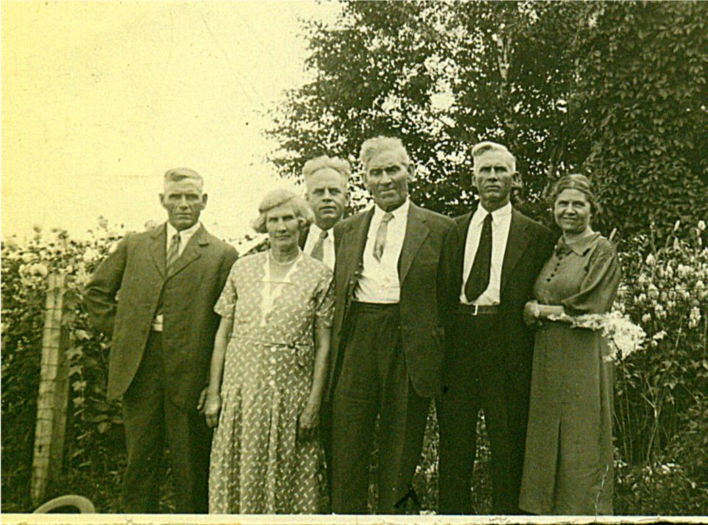

The Family Chronicle
No.58 January 15, 2004
________________
Glendenning Family Photo

An undated photo, taken in 1937 or earlier, of my father, Elmer, and some of his siblings. From left to right: Raymond, married to Hilda Ellis, lived in Canobie, N.B.; Maude, married to Jim Cormier, lived in Canobie, N.B.: Guy, married to Hazel Stults, lived in Bowling Green, Florida; Elmer, married to Jane Watling lived in Little Branch, New Brunswick; Chip, married Louise Ellis, lived in Canobie, N.B.; Minnie, married Ed Weeks, lived in Mill Neck, Long Island. Missing are Venetia, married to Bob Doring, lived in Bowling Green, Florida; Margaret, married to Lucas Marsen, lived in Boothbay Harbour and; Ray married to Hilda Ellis, lived in Canobie.
Old Photos
I’ve tried to figure out why there were photos of my older siblings and none of the younger ones except me. My conclusion is that while Mum and Dad lived in the US, they took photos to send back to Grandma and Grandpa. After moving back, grandparents didn’t need photos because they lived next door. Later, when I cam along, Grace and later Lillian had moved to the US so they took photos of me to send. At least that is my theory.
Meals
Although I often worked at the “thrasher’ at
home, I never worked a “thrasher” elsewhere. I spoke, therefore, with brothers, Norman and Kenneth about their recollections. A Threshing crew consisted of 8 or more men. At least one meal was provided and sometimes two meals if the crew worked late to finish up.
The crew started at 8:00 am. Dinner was about 11:30. Meals might vary but usually included meat (roast beef or maybe pork), potatoes, carrots maybe turnip, bread, with tea (cannot remember ever having coffee) and dessert. Jean says that apple pie was a favourite. One of Mum’s regular desserts when there was a crowd at the house was gingerbread with whipped cream. The second meal, if there were one, would be about 4:00 pm. Many times the work was done by 4:00 pm or so and a second meal was not necessary.
My first Movie
Movie theatres were late in arriving in Black River. I know there wasn’t any in the 1930’s and I do not recall any even when I graduated from high school. I do, however, remember my first movie.
In the summer of 1936, July I believe, Dad and Walter drove the old Model A to Boston to bring Grace home. She was married on August 26,1936 in Black River. Elinor and I were taken along for the ride. We stopped at Uncle Leonard Glendenning’s in Palermo, Maine; we also stayed with Aunt Margaret Marsen in Boothbay Harbour. Uncle Luke had a new car and took us to the circus. It had curved not square lines like the Model A.
We stayed with Uncle Frank and Aunt Lil Glendenning in Portland. In fact, I may have stayed there while Dad and Walter went on to Boston to pick up Grace. While at Uncle Frank’ s I went to my first movie. Did Elinor take me? I cannot recall.
The movie was a comedy in black and white and, as I recall, was Abbot and Costello or at least that kind of movie. It may have even been silent. Part of it involved some house repair and I remember the feathers from a feather mattress flying. In another scene, one person was carrying a long piece of lumber out the glass door. Several times he opened the door, went back and picked up the lumber and, by the time he got to the door the door had closed. At the end, he opened the door, ran back and picked up the lumber, rushed to the door and poked the board through the glass.
Teaching a Calf to Drink
I was part of a conversation a few days ago in which someone expressed surprise that calves had to be taught to drink from a bucket. Well, calves seem to know how to get milk from a cow’s teat but not from a bucket.
As I recall, one put a bit of milk in a bucket, then you put the fingers of the right hand in the calf’s mouth. When it started sucking on your fingers, you pushed its head down so that your fingers were in the milk. It got milk when it sucked on your fingers. Then you removed your fingers and the calf simply sucked the milk. Simple, isn’t it.
Rev. McGregor
Before a church was built, Black River was served by itinerant ministers and missionaries. Among the visiting ministers was the Rev. Dr. James McGregor, a Scot based in Pictou, Nova Scotia whose visits to a community usually lasted several days and even weeks and included preaching, praying, and religious conversations. Rev. Patterson, a grandson, I believe, wrote a biography of McGregor and reported:
“On the first and second visits to the Miramichi in 1797 and 1807, he preached and baptized at Black River, Bay du Vin, and on both sides of the Miramichi, up as far as the point, so called, at the junction of the North and South-west branches. Those who recollect him remark his happy faculty in introducing religious conversation.”
And further on:
“His being present at the induction of Mr. Thompson in 1817 is well remembered.”
Covered Bridges
In my day, Black River was served by three covered bridges. The shortest, I believe was the one at Middle Black River (near the Cameron School). The longest was the Victoria Bridge near the mouth of the river (near Hexham).The Branch Bridge was an in between size and like the Victoria Bridge had a long causeway leading up to it especially on the north side.
The Chronicle is an occasional newsletter published by Don Glendenning It is designed to share information about my family, community and the times in which I grew up. While every effort is made to be accurate, errors are likely to occur. Comments, enquiries and information may be sent to 62 Queen Elizabeth Drive, Charlottetown, PEI, C1A 3A9. Tel: 902-892-5859 Email: don@glendenning.net. Web: www.glendenning.net